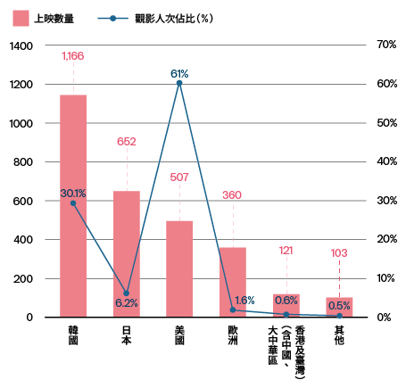
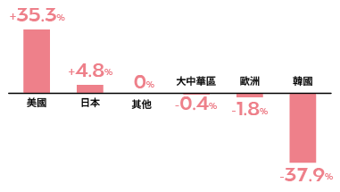
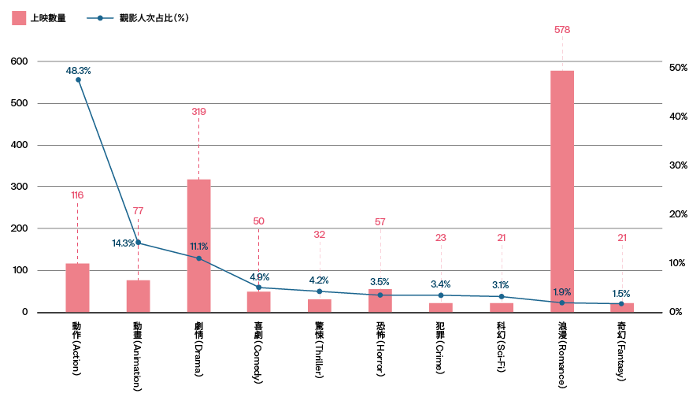
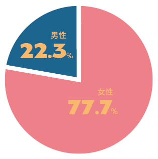

有關《我的少女時代》──韓國人來吿訴你在韓國為什麽紅
文策院今（2022）年委託Ipsos韓國團隊透過爬梳當地資料與數據，剖析臺灣電影《我的少女時代》能在韓國創下首映近41萬觀影人次，並獲得韓國2016年外國藝術／獨立電影票房第二名，背後的成功因素究竟為何，同時提出未來臺灣電影要進入韓國市場可能面臨的挑戰、機會點，以及可嘗試的行銷方式。但在此前，我們得先了解韓國近二年的電影產業狀況及市場偏好，才會更清楚臺灣電影能夠進入韓國並取得票房成功之不易。
韓國在2021年的電影產業規模約為1兆2,390億韓圜（約新臺幣275億）¹，受到全球COVID-19影響， 2021年整體產值較疫情前的2019年產值（2兆5,000億韓圜）下滑了40.8%；相較之下2021同年度，全臺電影市場總票房約新臺幣49.64億元，較前一年度則減少3.8%。
觀察各國電影在韓國上映的數量和觀影人次占比會發現，即便2021年仍是疫情嚴峻之時，在韓國上映的本土電影數量仍有1,166部，由於韓國觀眾非常樂於買票進戲院支持國產電影，自2011年起，每年國產電影的院線觀影人次占比總是超過50%，只有在去年，該比例下滑至30.1%，面臨了11年來首次低於50%的狀況。而2021年美國電影在韓國共有507部上映，數量上雖不及日韓電影，但整體來說在韓國的院線觀影人次占比高達61%，可以想見應多是具娛樂性、大螢幕特效的好萊塢大片（blockbuster）帶來的成果。日本電影在當年度總觀影人次約為376萬，占比6.2%，其中有215萬觀影人次係由《鬼滅之刃劇場版 無限列車篇》貢獻；而華語電影在韓國上映的數量僅有121部，觀影人次占比只有0.6%，在上映數量或觀影人次上都較其他語言電影弱勢。
2021各國電影 在韓上映數量與觀影人次占比—
觀影人次占比較前一年之增減（百分點）
若以電影類型來看韓國觀眾偏好，2021年韓國民眾進戲院看動作片的觀影人次占比高達48.3%，該類型票房最高的電影為《蜘蛛人：無家日》，其次依序為動畫（14.3%，絕大部分是日本鬼滅之刃劇場版貢獻之成績）、劇情（11.1%）、喜劇（4.9%）、驚悚（4.2%）、恐怖（3.5%）、犯罪（3.4%）、科幻（3.1%）、浪漫（1.9%）、奇幻（1.5%）。可見浪漫類型的電影要吸引韓國民眾進電影院買票觀賞，並不容易。
2021年最受歡迎之電影類型前十名及上映數量
在1990年前，主導韓國電影市場的是當時風靡整個亞洲的香港電影，自1990年起，臺灣電影因為楊德昌、蔡明亮、侯孝賢等導演推出的數部經典之作，如楊導的《牯嶺街少年殺人事件》（1991）和《一一》（2000），蔡導的《愛情萬歲》（1994）和《河流》（1997），侯導的《悲情城市》（1989）、《戲夢人生》（1993）、《海上花》（1998）等，在韓國掀起了一股潮流，吸引了一批死忠的影迷，臺灣電影自此奠定了藝術電影的形象，彼時更被譽為「藝術電影的黃金時代」；前述經典作品至今仍在韓國釜山影展的亞洲百大電影名單中占有多個位置，甚至在展會期間於韓國搜尋引擎網站Naver上仍有討論聲量。
但此後，2008年青春校園浪漫電影《不能說的秘密》在韓國造成轟動，2010年的《聽說》、2012年《那些年，我們一起追的女孩》、2017年《帶我去月球》等相似類型電影相繼在韓國上映並取得漂亮成績，涵蓋青春浪漫元素的臺灣電影漸被韓國觀眾認識與喜愛，至2016年《我的少女時代》在韓國首映以近41萬的觀影人次達到高峰，一度創下最多韓國人觀看的臺灣電影紀錄 ，並獲得當年度外國藝術/獨立電影票房第二名，可以說臺灣的青春浪漫類型電影以《不能說的秘密》在韓國打下口碑基礎，再透過《我的少女時代》奠定了一個票房里程碑。
雖然浪漫類型的電影去（2021）年在韓國有多達578部上映，但該類型的觀影人次占比僅有1.9%，《我的少女時代》能在一片紅海中異軍突起，可能的成功因素有下列幾點
美學形塑的懷舊氛圍，搭上韓國NewTro風潮
《我的少女時代》是一部由陳玉珊導演，宋芸樺和王大陸領銜主演，其中有港星劉德華客串的1990年代高中校園愛情故事。電影中色調的運用、彩虹雨的畫面、慢動作的鏡頭，到自然光的拍攝，都讓觀眾更能沉浸在懷舊氛圍和浪漫的情境中，而這種懷舊的氛圍恰巧也是韓國年輕族群近年喜愛的元素：韓國的年輕族群在近年興起新復古（NewTro）風潮，即以現代眼光重新定義復古與懷舊的概念；這個概念應用範圍廣泛，從零食和手機的包裝設計，到建築、時尚等皆有相關案例。
在影視方面，韓國國內懷舊設定的連續劇《請回答》系列自播出後創下國內tvN電視台各種紀錄並成為經典，助長了NewTro的崛起與普及，其國內院線也開始重映1990年代左右的經典電影，因此2021年最多韓國觀眾看的華語電影是由張國榮主演的香港電影《異度空間》一事，便顯得在情理之中。
「懷舊」成為一個年輕族群重視且買單的元素，因此《我的少女時代》能在韓國取得巨大成功，電影的懷舊復古調性與韓國流行文化的一致性功不可沒，正如韓國影評人金亨錫（김형석）被問到是什麼要素讓臺灣青春浪漫電影走進了韓國觀眾心中，他以二字答道：「懷舊（향수）」²。
相似經歷引發的跨國情感共鳴
1980和1990年代的時空設定，正是臺灣與韓國學生們都歷經過、為了自由民主而反抗威權的時空背景，而高中生們的校園生活也極度相似，容易讓觀眾產生情感共鳴。就如同將臺灣電影《帶我去月球》引進韓國的金時內社長說的：「即使是臺灣電影，裡面的主角也穿著校服、上課緊張、考慮上大學，這和韓國觀眾的學校經歷沒有太大區別」³。
影展曝光，社群行銷與在地連結
《我的少女時代》在2015年入選韓國釜山影展「Open Cinema」單元，當時電影劇照被選為「Open Cinema」單元的代表圖片，電影還在釜山電影中心約可容納4千人的戶外廣場進行首映，這些曝光都有助形成後續觀眾間的話題發酵，吸引更多人買票進電影院；而透過韓國群眾普遍使用的社群媒體進行行銷宣傳，並以韓語表達友善訊息，都降低了臺灣與韓國之間的文化隔閡。如男主角王大陸透過個人Instagram帳號透露自己的「初戀」是韓星朴信惠、電影的臺灣Facebook官方帳號上傳演員們舉著以韓語書寫「《我的少女時代》觀影人次超過30萬了！」的開心照片，都讓韓國觀眾增加對演員和電影的認識與好感度，在韓國造成話題，進而提升對該片及未來臺灣電影的票房。
檔期成就的市場區隔性
由於跟《我的少女時代》在韓國同檔期上映的其他電影類型多為動作片，青春浪漫類型的電影在當時反而顯得稀有，相較之下更易吸引女性觀眾族群，而女性觀眾正是該片的目標客群，事後數據也證明《我的少女時代》有成功吸引到目標客群。根據韓國最大的連鎖電影院品牌「CJ CGV」（星聚匯；씨제이 씨지브이㈜）銷售數據顯示，進CGV電影院觀看《我的少女時代》的觀眾中有近八成（77.7%）為女性，男性僅占約二成（22.3%），而以年齡來看，20歲至29歲的觀眾占比超過五成為最大宗（55.8%），其次為30歲至39歲（19.7%）和40歲至49歲（13.4%）。
《我的少女時代 》 觀影群眾之性別與年齡分布
雖然臺灣的浪漫類型電影在韓國開始有一定口碑，但這種題材類型因故事線缺乏新鮮感，容易落於俗套，再加上每年在韓國院線上映的浪漫電影數量眾多（2021年有578部），競爭激烈，但該類型吸引觀眾進電影院觀看的比例卻僅有1.9%，這是未來臺灣若要繼續行銷浪漫題材電影至韓國市場會面臨的挑戰之一；而前述提及的金時內社長對於臺灣浪漫電影也有一針見血的評論：「在臺灣，『青春浪漫』不是代表性題材，［電影］製作數量也不多」，要如何突破產能的限制，也是臺灣要認真思考的課題。
但臺灣電影若要進入韓國市場，具有的先天優勢在於彼此間有一定程度的文化同質性，許多背景設定與情節安排容易讓韓國觀眾理解，甚至從觀眾自身的人生經驗中引發共鳴。
隨著臺灣近年浪漫類型的影視內容在韓國屢創佳績，甚至被購買翻拍版權（如電影《不能說的秘密》和劇集《想見你》），韓國觀眾對於臺灣浪漫電影的重要元素——美學、情節轉折的說服力、原聲音樂等愈發熟悉和喜愛；韓國市場持續的正向回饋，也促使臺灣浪漫電影朝向類型化（genrefication）前進，並逐漸在海外市場建立藝術電影之外的新形象。
臺灣電影未來若要在韓國市場獲得成功，可以善用人氣演員的粉絲基礎和韓國強大的粉絲文化，搭配首映會、映後座談（Greet and View）、推播人氣演員的劇照等方式增加曝光，讓宣傳的資訊藉由粉絲基礎（如站姐）和網路擴散給更多群眾，形成口碑宣傳。近期成功案例如《我的少女時代》主演王大陸因該片在韓國爆紅擄獲一群女性粉絲，其後出演浪漫電影《一吻定情》男主角，在韓國以42.7萬觀影人次打破《我的少女時代》紀錄；或如《消失的情人節》在韓國舉辦首映會後，引發網友們在extmovie和PPOMPPU等平台分享觀影心得等。
網路行銷部分，因近年韓國觀眾也開始出現「先看社群評論或網紅濃縮過的電影介紹後再決定是否觀看」的趨勢，可以思考與韓國相關網紅合作的可能性，YouTube網站上「GoMong」、「Gmovie」、「KIMSISEON」、「DreamTeller」等幾位訂閱者超過100萬的網紅都是可參考的對象。
參加韓國國際影展其實是重要且直接的行銷曝光管道，對於在韓國市場提高曝光度頗有成效。
最後，參加韓國國際影展其實是重要且直接的行銷曝光管道，對於在韓國市場提高曝光度頗有成效。如前文中提到的《我的少女時代》，又如2021年《月老》為韓國富川國際奇幻影展開幕片，其後在韓國院線上映，不到一週便創下超過一萬人次的亮眼票房成績；《詭扯》入選釜山國際影展，並勇奪第25屆韓國富川國際奇幻影展的評審團大獎，受到extmovie和kspnews等多家新聞媒體分享相關相關消息；《親愛的房客》、《揭大歡喜》、《金錢男孩》等電影因有入選富川國際奇幻影展、首爾驕傲電影節等，近一年半在韓國社群中有相當討論聲量皆是例證。其它管道的行銷宣傳當然也必要，只是有些訣竅要注意：如社群行銷時，配合各種社群媒體的特性推播不同時長規格的行銷片花，以韓語作為傳遞資訊的語言，並以韓國民眾普遍使用的SNS（社群網路網站，如Kakao Story、KakaoTalk、NAVER Café、SNOW、Twitter等）為主要資訊露出管道，才能達到最佳的行銷觸及效果。